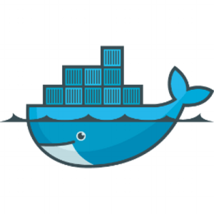

I'm putting this obvious solution up as I couldn't see it anywhere online.
If you try to start up boot2docker with boot2docker start and it returns.
error in run: Failed to start machine "boot2docker-vm": exit status 1
Before destroying everything and wiping your ~/Virtualbox VMs folder, try starting up Virtualbox and seeing if the vm simply hasn't been suspended due to an OSX suspend or shutdown.
And that's it, hope it works for you.